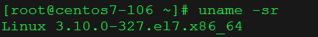
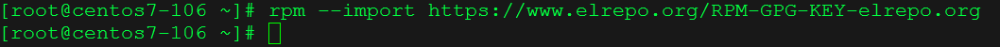
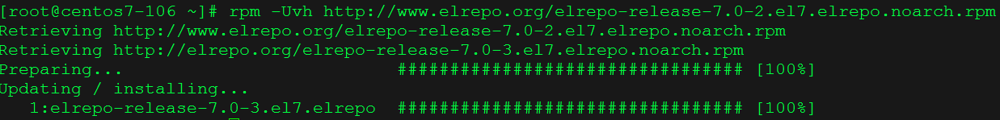
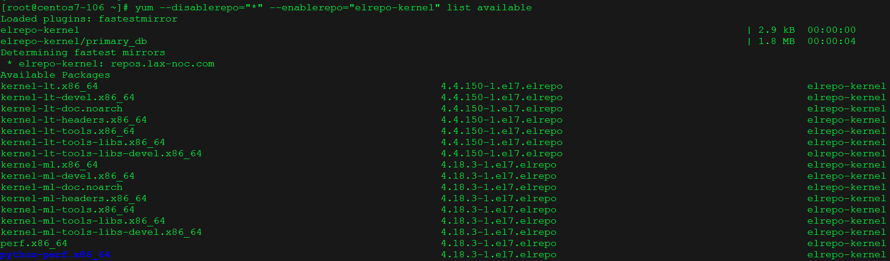
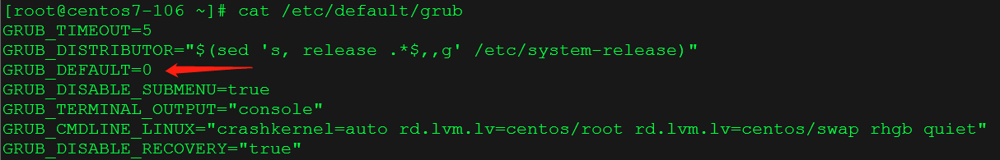
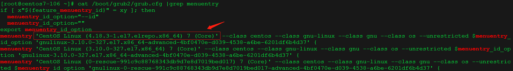
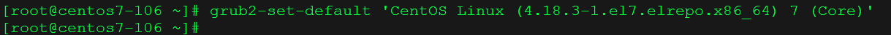
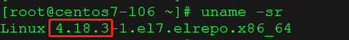

centos7无故重启-内核升级
最近有一台物理服务器，centos7操作系统，无故重启，每天都会发生这种情况：
解决：
升级内核
CentOS 允许使用 ELRepo，这是一个第三方仓库，可以将内核升级到最新版本。
1、
没升级之前先查看一下内核：uname -sr

要在 CentOS 7 上启用 ELRepo 仓库，请运行：
rpm --import https://www.elrepo.org/RPM-GPG-KEY-elrepo.org #导入key，可能会失败(没关系)，继续往下操作即可

rpm -Uvh http://www.elrepo.org/elrepo-release-7.0-2.el7.elrepo.noarch.rpm #升级安装 ELRepo

2、
yum --disablerepo="*" --enablerepo="elrepo-kernel" list available #查看

3、
安装最新的主线稳定内核：
yum --enablerepo=elrepo-kernel install kernel-ml #中间会有提示都输入y即可
4、
编辑/etc/default/grub 并设置 GRUB_DEFAULT=0 意思是 GRUB 初始化页面的第一个内核将作为默认内核。

查看系统当前可使用的内核；
cat /boot/grub2/grub.cfg |grep menuentry

图中4.18版本的就是刚才安装的内核，
5、
#修改开机时默认使用的内核，(此处应看清自己的内核版本，不要一味的复制)
grub2-set-default 'CentOS Linux (4.18.3-1.el7.elrepo.x86_64) 7 (Core)'

然后重启系统；
6、
查看当前使用的内核，发现已经升级完成了；

我的系统升级完内核，观察了一个多星期，没有出现过自动重启的现象；
还有一些其他的解决办法，我没有测试，如下： (具体问题还要仔细去分析日志)
如：
解决方法：
# vi /boot/grub/grub.conf
在kernel一行最后加上添加 intremap=off 或者 intremap=no_x2apic_optout
然后重启服务器即可。
参数解释：
intremap={on,off,nosid,no_x2apic_optout}
on：(默认值)开启中断重映射,BIOS中默认开启
off：关闭中断重映射
nosid：重映射时不对SID(Source ID)做检查
no_x2apic_optout：无视BIOS的设置，强制禁用x2APIC特性，主要用于解决某些对x2APIC支持有缺陷的BIOS导致的故障

【推荐】华为云11.11普惠季 血拼风暴 一促即发
【工具】SpreadJS纯前端表格控件，可嵌入应用开发的在线Excel
【腾讯云】拼团福利，AMD云服务器8元/月
· Centos7升级新内核
· Centos 7升级内核
· 如何在 CentOS 7 中安装或升级最新的内核
· CentOS 7. × 系统及内核升级指南
· centos 更新linux内核
· 双十一打破记录背后，是一部中国零售的变迁史
· 拼多多9小时超去年双十一GMV 贫困县产生1200万个订单
· 我国“人造太阳”EAST装置 实现1亿摄氏度等离子体运行
· 纽约时报：阿里，造势之王
· 断电9小时，600万人受影响，什么天气这么可怕？
» 更多新闻...